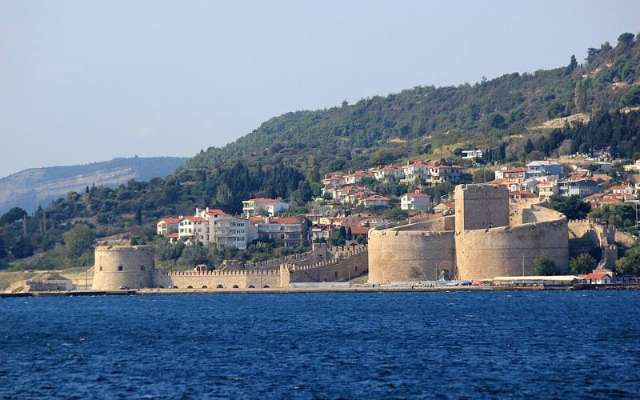

El primer día empieza en Troya y su museo y sigue por Alejandría de Tróade y el Esmintio hasta llegar a Assos al atardecer. El segundo día sigue la campaña de Galípoli por las baterías de ambas orillas de los Dardanelos y la fortaleza de Kilitbahir.
Día 1

Troya se convirtió en la ciudad más famosa de la literatura universal gracias a la Ilíada de Homero.

El Museo de Troya, a la entrada del pueblo de Tevfikiye, cerca de la antigua Troya, destaca por su llamativa arquitectura moderna: un cubo que surge del suelo, pensado…

Alejandría de Tróade, cerca del pueblo de Dalyan, junto a Ezine, en la costa del Egeo, fue un gran puerto fundado en época helenística por uno de los generales de…

El Esminteo, en el pueblo de Gülpınar, es un santuario de Apolo «Esminteo», asociado a los ratones y la peste.

Assos, sobre el pueblo de Behramkale, corona una colina volcánica que domina el golfo de Edremit y Lesbos.
Día 2

El castillo de Kilitbahir, en la orilla europea del punto más estrecho de los Dardanelos, fue construido en el siglo XV por el sultán Mehmed el Conquistador.

El Bastión de Namazgâh, en Kilitbahir, es uno de los eslabones clave de la línea de defensa costera en la orilla europea de los Dardanelos.
El Bastión de Hamidiye y el Museo de Historia de las Batallas de Çanakkale ocupan uno de los bastiones que desempeñaron un papel clave en la defensa de los Dardanelos.
El Centro de Interpretación de la Epopeya de Çanakkale, en la península de Galípoli, presenta la campaña de Galípoli de 1915 con técnicas modernas de interpretación.
El Área de recreación de la Media Luna Roja (Hilal-i Ahmer) de Çanakkale es una exposición al aire libre que recrea los servicios médicos de la Media Luna Roja otomana…
Rutas preparadas día a día para ayudarle a planificar. Los tiempos son aproximados; consulte horarios y estado de las carreteras antes de salir.